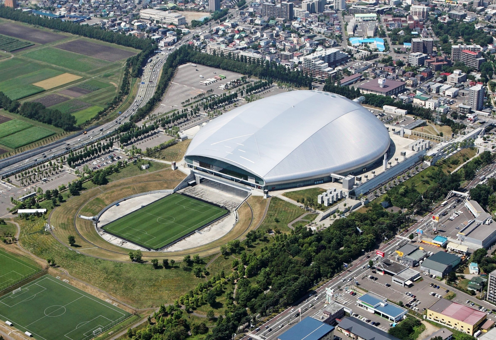

Mundial Japon Corea 2002
| Principal | Japon y Corea 2002 | Alemania 2006| Sudafrica 2010| Brasil 2014| Rusia 2018| Qatar 2022| Mundiales de la historia |
El primer Mundial disputado en suelo asiático dejó campeón a Brasil, nuevamente venciendo a Alemania (2-0) el combinado que mas finales ha disputado en la historia de los Mundiales. Ronaldo, que fue triste protagonista en la final de 1998, se desquitaría con un doblete que valdría para que la Canarinha se convirtiera en pentacampeona en el estadio de Yokohama.
